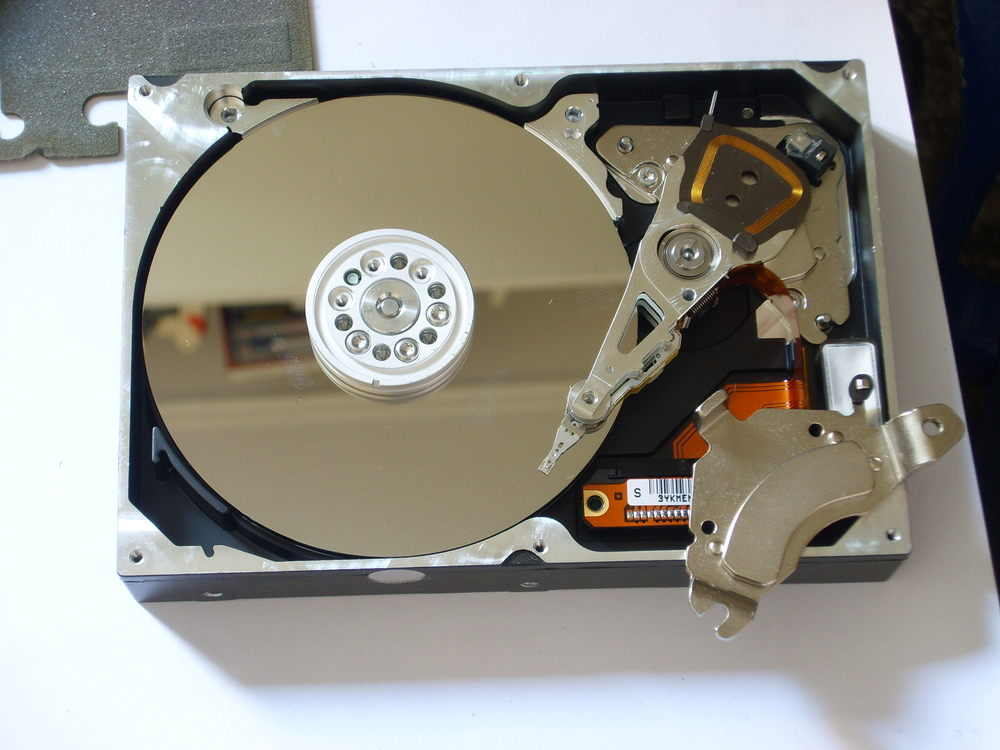

A számítógép agya a központi vezérlőegység (CPU: Central Precessing Unit) . Két fő része a vezérlőegység (CU: Control Unit), ami a memóriában tárolt program dekódolását és végrehajtását végzi, valamint az aritmetikai és logikai egység (ALU: Arithmetical and Logical Unit), ami a számítási és logikai műveletek eredményének kiszámításáért felelős. A központi vezérlőegységet processzornak is nevezzük. Feladata a gép irányítása, a feldolgozási folyamatok vezérlése, az adatok feldolgozása, számítások elvégzése, a memóriában tárolt parancsok kiolvasása és végrehajtása, illetve az adatforgalom vezérlése. Az utasítások végrehajtásához a CPU átmeneti tárolóhelyeket, úgynevezett regisztereket használ, amelyek gyorsabban elérhetőek, mint a memória.
A RAM (Random Acces Memory) véletlen elérésű írható és olvasható memória. A RAM az a memóriaterület, ahol a processzor a számítógéppel végzett munka során dolgozik. Ennek a memóriának a tartalmát tetszőleges sorrendben és időközönként kiolvashatjuk vagy megváltoztathatjuk. A RAM-ot más néven operatív tárnak is nevezzük. Minden bevitt adat először a RAM-ba íródik, és ott kerül feldolgozásra. Itt helyezkednek el és ezen a területen dolgoznak az aktuálisan működő programok is. A RAM azonban nem alkalmas adataink huzamosabb ideig való tárolására, mert működéséhez folyamatos áramellátásra van szükség.
A legrégibb típus az FPM DRAM. Belsőleg bitek mátrixaként szervezett tömb, melyben külön címezzük a sort és az oszlopot és a megfelelő késleltetés után a bitmátrix adott cellájának tartalmát megkapjuk a kimeneten.
Az EDO DRAM megengedi a második memóriahivatkozás elkezdését mielőtt még az előző eredménye megjelenne a kimeneten.
A PROM ugyanolyan mint a ROM azzal a különbséggel, hogy felhasználó írhatja be a tartalmát egyszerre. E vonalban a következő találmány az EPROM volt, amit nem csak írni, hanem törölni is lehetett. Itt a chip egy kvarcablakon keresztül pár percig tartó erős ultraviola sugárzás hatására minden bitet 1-be állít és a beprogramozást ismét el lehet végezni. Az EPROM-nál még fejlettebb az EEPROM, amit impulzusokkal lehet törölni ahelyett, hogy be kelljen tenni egy speciális kamrába és ultraviola sugárzásnak kelljen kitenni. Ráadásul az EEPROM-ot helyben lehet programozni, míg az EPROM-ot csak egy külön erre kifejlesztett EPROM-programozó készülékkel.
Az alaplap megszabja a felhasználható processzor(ok) típusát és sebességét, a bővítőkártyahelyek számát és fajtáját, a felhasználható memória típusát, az adott gép által kezelhető maximális memóriaméretet, a használható számítógépházat és tápegységet. Méretét legtöbbször az ATX (régebben az AT) szabvány szerint alakítják ki.
A háttértár olyan számítógépes hardverelem, mely nagy mennyiségű adatot képes tárolni, és azokat a számítógép kikapcsolása után is megőrzi. Erre azért van szükség, mert a számítógép műveleti memóriájában csak ideiglenesen lehet adatot tárolni, ennek tartalma a számítógép kikapcsolása után törlődik. A mai számítógépek legtöbbje digitális, azaz számokkal dolgozik, minden adatot (kép, hang, egyéb) számokká alakítva kap meg, így számokat dolgoz fel és azokat kell, hogy eltárolja. A tároló eszközök különböző elveken tárolják az adatokat:
Készítette: Szöllősi Balázs